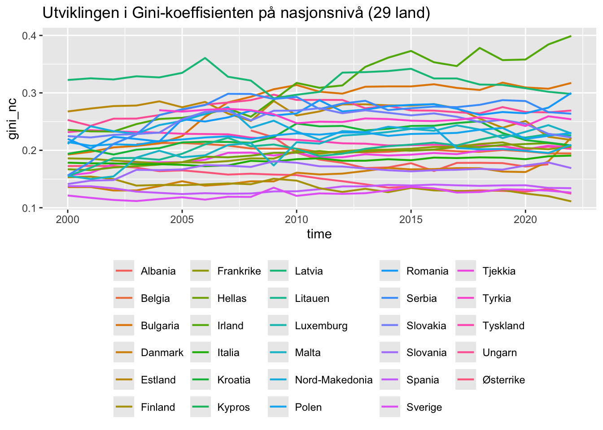
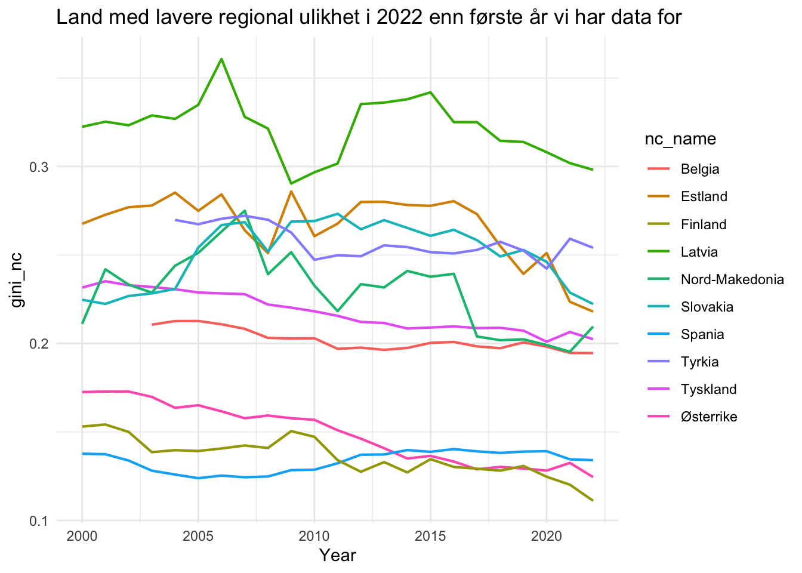
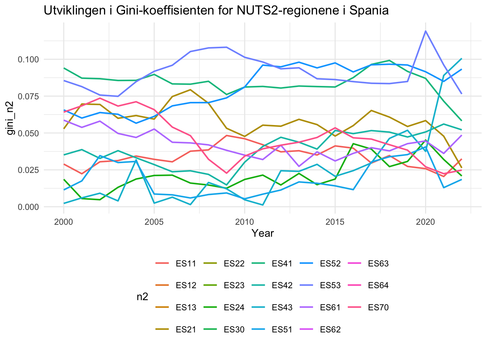
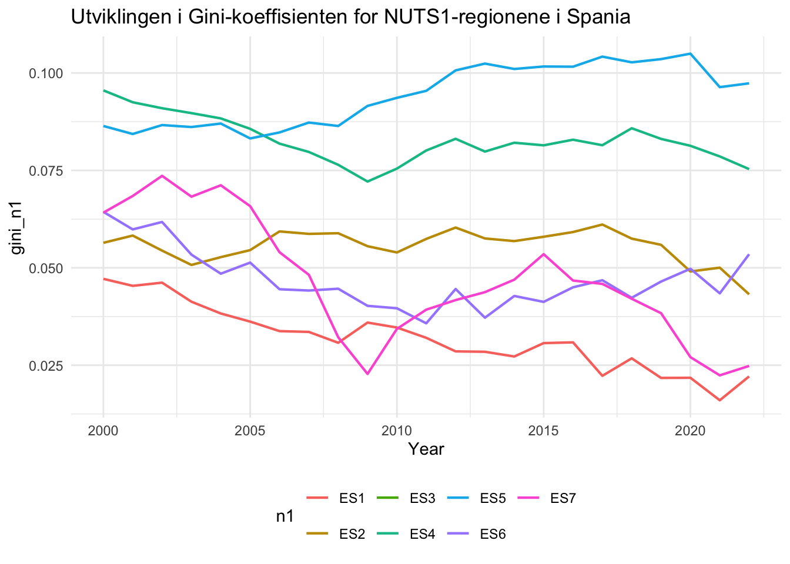
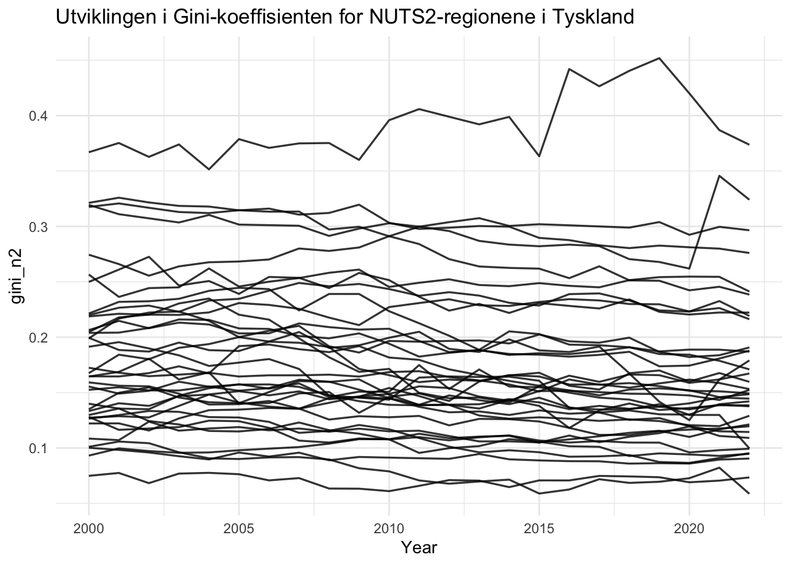
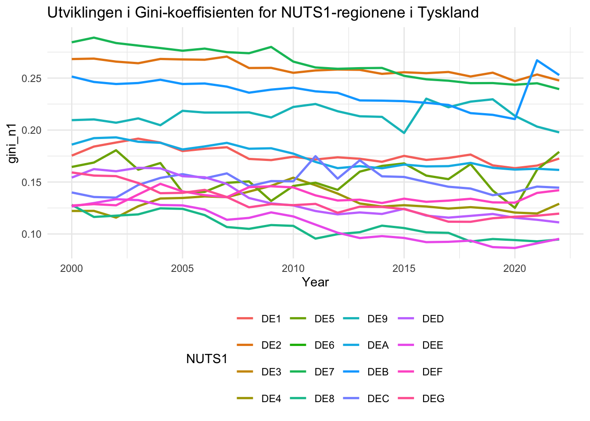
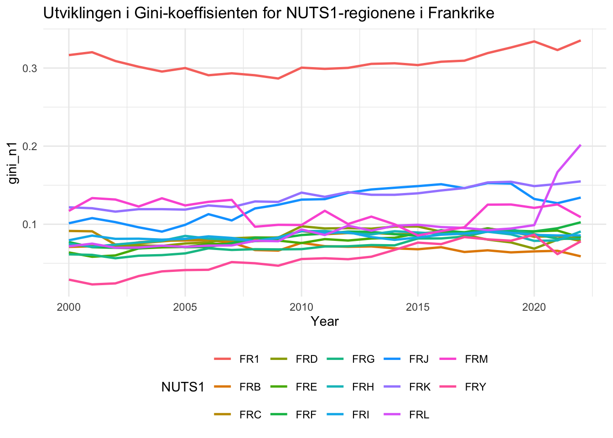
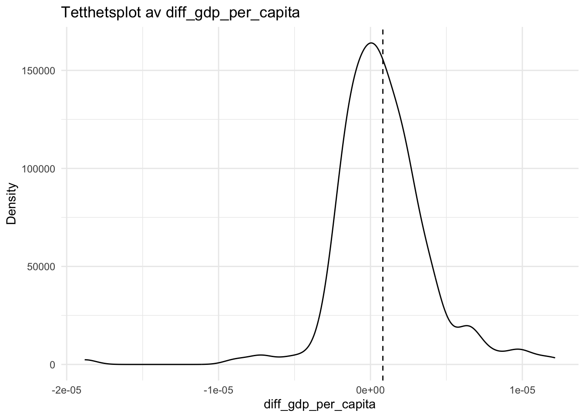

library(tidyverse)
library(readxl)
library(restatapi)
library(DescTools)
library(ggrepel)
library(flextable)
library(modelr)
library(plm)
library(broom)
library(sandwich)Arbeidskrav_4_DataScience
if(Sys.info()["sysname"] == "Windows") Sys.setlocale("LC_ALL", "Norwegian")Oppgaven handler om å hente regionale tall fra Eurostat direkte inn i R ved hjelp av et API. Daten brukes til å analysere økonomiske forskjeller mellom regioner i Europa. Arbeidskravet vil dermed ha:
Henter data på laveste regionale nivå (NUTS3)
Summerer (aggregerer) dataene oppover til NUTS2, NUTS1 og til slutt landnivå
Ser på BNP, befolkning og BNP per innbygger
Beregning av Gini-koeffisient for å måle ulikhet mellom regioner
Innen hvert land (Mellom regioner)
Samlet for EU + utvalgte søkerland
Dataene dekker perioden 2000 - 2023
Bruker tidyverse og list-columns for å organisere dataene ryddig, slik at hver rad kan inneholde egne datasett (nested tibbles).
Toc. eurostat
Her velger vi å søke i tox_txt etter tabeller med BNP (GDP) på NUTS3-nivå ved hjelp av str_detect().
# Her henter vi innholdsfortegnelsen fra Eurostat og legger det inn i en dataframe vi kaller "toc_txt"
toc_txt <- get_eurostat_toc(mode = "txt")GDP NUTS 3
Her henter vi inholdsfortegnelsen fra Eurostat. Vi gjør dette ved å hente innholdsfortegnelsen i rent tekst format, der vi gir navnet toc_txt. Siden vi ikke vet helt om det brukes store eller småe bokstaver her, så bruker vi regex for å matche begge deler. Ved å bruke filter() velger vi tabeller som inneholder både “gdp” og “NUTS3”, og med å bruke slect() ta vi kun med kollonene title og code.
Tabellen vises med flextable(), som gjør at resultatene kan lett leses. For å sikre at begge ordene finnes i tittelen, bruker ci en AND-betingelse (&) mellom to str_detect() uttrykk.
gdp_tabs <- toc_txt |>
# Regex AND external to regex
filter(
str_detect(
string = title,
# For å matche både små og store bokstaver
pattern = '[Gg][Dd][Pp]'
# AND vha. &
) &
str_detect(
string = title,
# For å matche både små og store bokstaver og
# space eller ikke før 3
pattern = '[Nn][Uu][Tt][Ss]\\s*3'
)
) |>
select(title, code)gdp_tabs |>
select(title, code) |>
flextable() |>
width(1, width = 3.5) |>
width(2, width = 1.5)title | code |
|---|---|
Average annual population to calculate regional GDP data (thousand persons) by NUTS 3 region | nama_10r_3popgdp |
Gross domestic product (GDP) at current market prices by NUTS 3 region | nama_10r_3gdp |
Her bruker tabellen med koden nama_10r_3gdp, som inneholder BNP (GDP) på NUTS3-nivå. For å se hvilken variabler og verder som finnes i datasettet, henter ci “Data Structure Definition” (DSD). Denne informasjonen brukes til å sette riktige filters i spørringen mot Eurostat. Det er spesielt viktig å bruke nuts_leve = “3” for å fikre at vi henter data på NUTS3-nivå, siden dette ikke er åpenbart dokumentert.
Vi Laster dermed ned «Data Structure Definition (DSD)» for tabellen med kode nama_10r_3gdp.
# description nama_10r_3gdp
dsd_gdp <- get_eurostat_dsd("nama_10r_3gdp")dsd_gdp |>
filter(concept %in% c('freq', 'unit')) |>
flextable() |>
width(j = 1, width = 1) |>
width(j = 2, width = 2) |>
width(j = 3, width = 2)concept | code | name |
|---|---|---|
freq | A | Annual |
unit | MIO_EUR | Million euro |
unit | EUR_HAB | Euro per inhabitant |
unit | EUR_HAB_EU27_2020 | Euro per inhabitant in percentage of the EU27 (from 2020) average |
unit | MIO_NAC | Million units of national currency |
unit | MIO_PPS_EU27_2020 | Million purchasing power standards (PPS, EU27 from 2020) |
unit | PPS_EU27_2020_HAB | Purchasing power standard (PPS, EU27 from 2020), per inhabitant |
unit | PPS_HAB_EU27_2020 | Purchasing power standard (PPS, EU27 from 2020), per inhabitant in percentage of the EU27 (from 2020) average |
dsd_gdp |>
filter(concept %in% c('geo')) |>
head(n = 10) |>
flextable() |>
width(j = 1, width = 1) |>
width(j = 2, width = 2) |>
width(j = 3, width = 2)concept | code | name |
|---|---|---|
geo | EU27_2020 | European Union - 27 countries (from 2020) |
geo | BE | Belgium |
geo | BE1 | Région de Bruxelles-Capitale/Brussels Hoofdstedelijk Gewest |
geo | BE10 | Région de Bruxelles-Capitale/Brussels Hoofdstedelijk Gewest |
geo | BE100 | Arr. de Bruxelles-Capitale/Arr. Brussel-Hoofdstad |
geo | BE2 | Vlaams Gewest |
geo | BE21 | Prov. Antwerpen |
geo | BE211 | Arr. Antwerpen |
geo | BE212 | Arr. Mechelen |
geo | BE213 | Arr. Turnhout |
Utfra kodene i dsd_gdpkan vi da formulere følgende spørring mot Eurostat:
# Gross domestic product (GDP) at current market prices by NUTS 3 regions
# id: nama_10r_3gdp
# Vi velger å hente samtlige soner for så å filtrere ut de få vi ikke trenger
gdp <- get_eurostat_data(
id = "nama_10r_3gdp",
filters = list(
# neste linje viser hvordan vi kunne ha hentet ut data
# for spesifiserte land
# geo = c("AT", "DE", "DK", "FR"),
nuts_level = "3",
unit = "MIO_PPS_EU27_2020"
),
exact_match = FALSE,
date_filter = 2000:2023,
stringsAsFactors = FALSE
) |>
mutate(
gdp_n3 = 1000000 * values
) |>
select(-c(unit, values)) |>
# Vil bare ha NUTS 3 nivå (5 karakterer). Vil aggregere selv til NUTS2,
# NUTS1 og NUTSc
filter(str_length(geo) == 5) |>
as_tibble()dim(gdp)[1] 30058 3# ag: ikke skriv 30000 observasjoner ut til skjerm
# jeg har lagt til head()
gdp |> head(n = 10)# A tibble: 10 × 3
geo time gdp_n3
<chr> <chr> <dbl>
1 AL011 2008 551130000
2 AL011 2009 582160000
3 AL011 2010 664070000
4 AL011 2011 631170000
5 AL011 2012 717600000
6 AL011 2013 696860000
7 AL011 2014 735600000
8 AL011 2015 788630000
9 AL011 2016 801980000
10 AL011 2017 800660000# ag: et alternativ er å bruke `#| paged.print: false`
gdp# A tibble: 30,058 × 3
geo time gdp_n3
<chr> <chr> <dbl>
1 AL011 2008 551130000
2 AL011 2009 582160000
3 AL011 2010 664070000
4 AL011 2011 631170000
5 AL011 2012 717600000
6 AL011 2013 696860000
7 AL011 2014 735600000
8 AL011 2015 788630000
9 AL011 2016 801980000
10 AL011 2017 800660000
# ℹ 30,048 more rowsHer har vi konvertert gdp til euro fra milioner euro. Vi vil og gi navnet gdp. Vi velger og å benytte MI0_PPS_EU27_2020 som mål på BNP.
Vi har et lite problem for sonen IE053. Her mangler vi gdp data for årene 2015, 2016 og 2017. Dette vil gi oss problemer senere hvis vi ikke fikser det.
gdp |>
filter(geo == "IE053")# A tibble: 21 × 3
geo time gdp_n3
<chr> <chr> <dbl>
1 IE053 2000 15837300000
2 IE053 2001 17506250000
3 IE053 2002 19395440000
4 IE053 2003 19687190000
5 IE053 2004 21000450000
6 IE053 2005 21776750000
7 IE053 2006 24081640000
8 IE053 2007 26086890000
9 IE053 2008 22705550000
10 IE053 2009 24012370000
# ℹ 11 more rowsVi legger derfor disse til gdp som NA verdier. Disse vil vi så erstatte med interpolerte verdier senere.
ie_data <- tibble(
geo = c("IE053", "IE053", "IE053"),
time = c("2015", "2016", "2017"),
gdp_n3 = c(NA, NA, NA)
)gdp <- rbind(gdp, ie_data)gdp <- gdp |>
arrange(geo, time) |>
mutate(
gdp_n3 = zoo::na.approx(gdp_n3)
)gdp |>
filter(geo == "IE053") |>
print(n = 25)# A tibble: 24 × 3
geo time gdp_n3
<chr> <chr> <dbl>
1 IE053 2000 15837300000
2 IE053 2001 17506250000
3 IE053 2002 19395440000
4 IE053 2003 19687190000
5 IE053 2004 21000450000
6 IE053 2005 21776750000
7 IE053 2006 24081640000
8 IE053 2007 26086890000
9 IE053 2008 22705550000
10 IE053 2009 24012370000
11 IE053 2010 24085200000
12 IE053 2011 26235110000
13 IE053 2012 24346250000
14 IE053 2013 23345250000
15 IE053 2014 25127580000
16 IE053 2015 37267470000
17 IE053 2016 49407360000
18 IE053 2017 61547250000
19 IE053 2018 73687140000
20 IE053 2019 71965850000
21 IE053 2020 75581570000
22 IE053 2021 99064470000
23 IE053 2022 122163400000
24 IE053 2023 103989840000Population demo_r_pjanaggr3
Oppgave 1
1. Søk i toc_txt for tabeller med population og NUTS 3. Pass på at dere dekker både population og Population og ulike skrivemåter for NUTS 3. Vi vil bruke befolkningstabellen som har teksten: «Average annual population to calculate regional GDP data (thousand persons) by NUTS 3 regions».
pop_tab <- toc_txt |>
filter(
str_detect(title, regex("population", ignore_case = TRUE)) &
str_detect(title, regex("NUTS\\s*3", ignore_case = TRUE))
)Oppgave 2
i. Finn koden for tabellen med forklarende tekst «Average annual population to calculate regional GDP data (thousand persons) by NUTS 3 regions».
pop_tab |>
filter(
str_detect(title, regex("population", ignore_case = TRUE)) &
str_detect(title, regex("NUTS\\s*3", ignore_case = TRUE))
) title
<char>
1: Population density by NUTS 3 region
2: Population on 1 January by age group, sex and NUTS 3 region
3: Population on 1 January by broad age group, sex and NUTS 3 region
4: Population structure indicators by NUTS 3 region
5: Population change - Demographic balance and crude rates at regional level (NUTS 3)
6: Population by single year of age and NUTS 3 region
7: Population by marital status and NUTS 3 region
8: Population by family status and NUTS 3 region
9: Population by sex, citizenship and NUTS 3 region
10: Population by sex, age group, current activity status and NUTS 3 region
11: Total and active population by sex, age, employment status, residence one year prior to the census and NUTS 3 region
12: Population by sex, age group, educational attainment level, current activity status and NUTS 3 region
13: Population by sex, age group, household status and NUTS 3 region
14: Population by sex, age group, size of household and NUTS 3 region
15: Average annual population to calculate regional GDP data (thousand persons) by NUTS 3 region
16: Population by country of citizenship, age groups and NUTS 3 region
17: Population by country of citizenship, age groups, family status and NUTS 3 region
18: Population by country of citizenship, age groups, type of housing arrangements and NUTS 3 region
19: Population by country of birth, age groups and NUTS 3 region
20: Population by country of birth, age groups, household status and NUTS 3 region
21: Population by country of birth, age groups, type of housing arrangements and NUTS 3 region
22: Population by marital status, broad age groups and NUTS 3 region
23: Population by family status, broad age groups and NUTS 3 region
24: Population by size of the locality, age groups and NUTS 3 region
25: Population by size of the locality, housing arrangements and NUTS 3 region
26: Population by year of arrival in the country since 2010, age groups, groups of country of birth and NUTS 3 region
27: Population by year of arrival in the country, age groups, family status and NUTS 3 region
28: Population with Ukrainian citizenship by 5-year age group and NUTS 3 region
29: Population with Ukrainian citizenship by age and NUTS 3 region
30: Population with Ukrainian citizenship by 5-year age group, marital status and NUTS 3 region
31: Population on 1st January by age, sex, type of projection and NUTS 3 region
title
<char>
code type lastUpdate lastModified dataStart dataEnd values
<char> <char> <char> <char> <char> <char> <num>
1: demo_r_d3dens dataset 2025.04.02 2025.04.02 1990 2023 55417
2: demo_r_pjangrp3 dataset 2025.12.04 2025.02.14 2014 2024 1386851
3: demo_r_pjanaggr3 dataset 2025.12.04 2025.02.14 1990 2024 709822
4: demo_r_pjanind3 dataset 2025.12.04 2025.02.14 2014 2024 1031936
5: demo_r_gind3 dataset 2025.10.10 2025.03.27 2000 2024 462291
6: cens_11ag_r3 dataset 2015.08.26 2024.01.10 2011 2011 722521
7: cens_11ms_r3 dataset 2019.04.01 2024.01.10 2011 2011 1391604
8: cens_11fs_r3 dataset 2015.08.26 2024.01.10 2011 2011 1409421
9: cens_01rsctz dataset 2009.03.27 2024.01.03 2001 2001 77613
10: cens_01rapop dataset 2009.03.27 2024.10.11 2001 2001 555759
11: cens_01ramigr dataset 2009.03.27 2024.01.03 2001 2001 1482371
12: cens_01rews dataset 2009.03.27 2024.10.14 2001 2001 210708
13: cens_01rhtype dataset 2009.03.27 2024.01.03 2001 2001 354029
14: cens_01rhsize dataset 2011.02.09 2024.01.03 2001 2001 288476
15: nama_10r_3popgdp dataset 2025.03.12 2025.02.11 2000 2023 40358
16: cens_21ctz_r3 dataset 2025.05.21 2025.05.21 2021 2021 31169981
17: cens_21ctzf_r3 dataset 2025.05.21 2025.05.21 2021 2021 5931246
18: cens_21ctzha_r3 dataset 2025.05.21 2025.05.21 2021 2021 3670227
19: cens_21cob_r3 dataset 2025.05.21 2025.05.21 2021 2021 34416168
20: cens_21cobhs_r3 dataset 2025.05.21 2025.05.21 2021 2021 7912772
21: cens_21cobha_r3 dataset 2025.05.21 2025.05.21 2021 2021 3671639
22: cens_21m_r3 dataset 2025.05.21 2025.05.21 2021 2021 212370
23: cens_21f_r3 dataset 2025.05.21 2025.05.21 2021 2021 424168
24: cens_21l_r3 dataset 2025.05.21 2025.05.21 2021 2021 1982428
25: cens_21lha_r3 dataset 2025.05.21 2025.05.21 2021 2021 424891
26: cens_21argc_r3 dataset 2025.05.21 2025.05.21 2021 2021 3958020
27: cens_21arf_r3 dataset 2025.05.21 2025.05.21 2021 2021 4591462
28: cens_21ua_a5r3 dataset 2023.03.13 2023.03.13 2021 2021 20511
29: cens_21ua_ar3 dataset 2023.03.13 2023.03.13 2021 2021 54936
30: cens_21ua_msr3 dataset 2022.07.07 2022.07.07 2021 2021 34680
31: proj_19rp3 dataset 2021.04.23 2024.01.10 2019 2100 91535616
code type lastUpdate lastModified dataStart dataEnd values
<char> <char> <char> <char> <char> <char> <num>pop_tab |>
filter(
str_detect(
title,
fixed("Average annual population to calculate regional GDP data (thousand persons) by NUTS 3 region")
)
) |>
select(code) code
<char>
1: nama_10r_3popgdp- Last ned Data Structure Definition (DSD) for denne tabellen.
# Så laster vi ned DSD for tabellen vi fant over.
dsd_pop <- get_eurostat_dsd("nama_10r_3popgdp")- Bruk opplysningene i DSD for å formulere en spørring mot Eurostat og last ned dataene. Gi dataene lastet ned navnet pop. Vi er bare interessert i totalbefolkning og ignorerer derfor både kjønn og alder. Vi ønsker data for årene 2000-2023.
Bruk filter(str_length(geo) == 5) for å begrense datasettet til NUTS3 regioner. Vi vil gjøre vår egen aggregering.
Hent data for samtlige land, dvs. vi trenger ikke sette noe filter for geo. Husk å konverter til tibble vha. as_tibble().
pop <- get_eurostat_data(
id = "nama_10r_3popgdp",
filters = list(
nuts_level = "3",
unit = "THS"
),
exact_match = FALSE,
date_filter = 2000:2023,
stringsAsFactors = FALSE
) |>
mutate(
pop_n3 = values * 1000
) |>
select(-c(unit, values)) |>
filter(str_length(geo) == 5) |>
as_tibble()dim(pop)[1] 30038 3Oppgave 3
Gjør en left_join() av de to tabellene. La gdp være venstre tabell (Viktig!). Gi resultatet navnet gdp_pop.
gdp_pop <- left_join(
gdp,
pop,
by = c("geo", "time")
)dim(gdp_pop)[1] 30061 4# ag: igjen paged.print: false gjør susen
gdp_pop# A tibble: 30,061 × 4
geo time gdp_n3 pop_n3
<chr> <chr> <dbl> <dbl>
1 AL011 2008 551130000 155390
2 AL011 2009 582160000 150430
3 AL011 2010 664070000 146140
4 AL011 2011 631170000 142580
5 AL011 2012 717600000 139340
6 AL011 2013 696860000 136020
7 AL011 2014 735600000 132690
8 AL011 2015 788630000 130050
9 AL011 2016 801980000 127320
10 AL011 2017 800660000 123290
# ℹ 30,051 more rowsGjør følgende tilpasning av gdp_pop og legger resultatet i variabelen eu_data.
eu_data <- gdp_pop %>%
# Trenger ikke ZZ sonene som er en slag oppsamlingssone
# for ikke fordelte verdier
filter(!str_sub(geo, 3, 4) == "ZZ") |>
# Drop the EFTA countries Switzerland and Norway
filter(!str_sub(geo, 1, 2) %in% c("CH", "NO")) |>
# Drop the EU countries Netherlands and Portugal
filter(!str_sub(geo, 1, 2) %in% c("NL", "PT")) |>
# Drop candidate country Monte Negro because of data
filter(!str_sub(geo, 1, 2) %in% c("ME")) |>
# Drop a region of France in the Indian Ocean (Outre Mer); Mayotte
# because of missing data
filter(!geo == "FRY50") |>
# note that a few countries will have missing data for
# some years at the start of the period
filter(time > 1999 & time < 2023)Regn ut gdp per capita og kaller variabelen gdp_pc_n3.
eu_data <- eu_data |>
mutate(
gdp_pc_n3 = gdp_n3 / pop_n3
)dim(eu_data)[1] 27584 5miss_eu <- eu_data %>%
filter(!complete.cases(.))
dim(miss_eu)[1] 0 5Oppgave 4
Endre navnet på variabelen geo til n3 og lag variablene n2 (NUTS2), n1 (NUTS1) og nc (for «Country») fra variabelen n3. Funksjonen str_sub() fra stringr pakken kan her være hendig å bruke.
eu_data <- eu_data |>
rename(
n3 = geo
) |>
mutate(
n2 = str_sub(n3, 1, 4), #Adding column for NUTS2
n1 = str_sub(n3, 1, 3), #NUTS1
nc = str_sub(n3, 1, 2) # And finally country.s
)Oppgave 5
Undersøk om vi har noen NUTS 3 soner med pop_n3 lik 0. Hvis det er noen så endre disse til NA.
# Sjekker om det finnes soner uten befolkning. Så synes ikke, og livet går videre.
eu_data |>
filter(pop_n3 == 0)# A tibble: 0 × 8
# ℹ 8 variables: n3 <chr>, time <chr>, gdp_n3 <dbl>, pop_n3 <dbl>,
# gdp_pc_n3 <dbl>, n2 <chr>, n1 <chr>, nc <chr>Oppgave 6
Sjekker hvor mange NUTS3 soner vi har i hvert land.
# ag: dere må sette max_row, ellers får dere bare med de 10 første
# tabellen blir litt lang. Se under for forslag til kode som lager en mer
# kompakt tabell
eu_data |>
distinct(nc, n3)|>
count(nc, name ="antall_nuts3")|>
as_flextable(
show_coltype = FALSE,
max_row = 30
) |>
line_spacing(space = 0.3)nc | antall_nuts3 |
|---|---|
AL | 12 |
AT | 35 |
BE | 44 |
BG | 28 |
CY | 1 |
CZ | 14 |
DE | 400 |
DK | 11 |
EE | 5 |
EL | 52 |
ES | 59 |
FI | 19 |
FR | 100 |
HR | 21 |
HU | 20 |
IE | 8 |
IT | 107 |
LT | 10 |
LU | 1 |
LV | 5 |
MK | 8 |
MT | 2 |
PL | 73 |
RO | 42 |
RS | 25 |
SE | 21 |
SI | 12 |
SK | 8 |
TR | 81 |
n: 29 | |
eu_data |>
distinct(nc, n3)|>
count(nc, name ="antall_nuts3") |>
add_row() |>
add_row() |>
add_row() %>%
{
list(
p1 = slice(., 1:8),
p2 = slice(., 9:16),
p3 = slice(., 17:24),
p4 = slice(., 25:32)
)
} |>
bind_cols() |>
flextable() |>
set_table_properties(
opts_pdf = list(
arraystretch = 0.8
)
) |>
set_header_labels(
nc...1 = "Land\nkode",
antall_nuts3...2 = "Antall\nnuts3",
nc...3 = "Land\nkode",
antall_nuts3...4 = "Antall\nnuts3",
nc...5 = "Land\nkode",
antall_nuts3...6 = "Antall\nnuts3",
nc...7 = "Land\nkode",
antall_nuts3...8 = "Antall\nnuts3"
) |>
line_spacing(space = 0.5) |>
autofit()Land | Antall | Land | Antall | Land | Antall | Land | Antall |
|---|---|---|---|---|---|---|---|
AL | 12 | EE | 5 | IT | 107 | RS | 25 |
AT | 35 | EL | 52 | LT | 10 | SE | 21 |
BE | 44 | ES | 59 | LU | 1 | SI | 12 |
BG | 28 | FI | 19 | LV | 5 | SK | 8 |
CY | 1 | FR | 100 | MK | 8 | TR | 81 |
CZ | 14 | HR | 21 | MT | 2 | ||
DE | 400 | HU | 20 | PL | 73 | ||
DK | 11 | IE | 8 | RO | 42 |
Oppgave 7
Sjekk summary gdp_pc_n3. Hva er største og minste verdi? Har vi noen NA?
summary(eu_data$gdp_pc_n3) Min. 1st Qu. Median Mean 3rd Qu. Max.
2214 14994 21144 22782 27952 180416 Minsteverdi er 2 214, mens høyeste er 180 416. Ingen NA.
Oppgave 8
Bruker case_when() for å legge til variabelen nc_name før vi går videre. Østerrike for AT, Belgia for BE etc..
eu_data <- eu_data |>
mutate(
nc_name = case_when(
nc == "AL" ~ "Albania",
nc == "AT" ~ "Østerrike",
nc == "BE" ~ "Belgia",
nc == "BG" ~ "Bulgaria",
nc == "CY" ~ "Kypros",
nc == "CZ" ~ "Tjekkia",
nc == "DE" ~ "Tyskland",
nc == "DK" ~ "Danmark",
nc == "EE" ~ "Estland",
nc == "EL" ~ "Hellas",
nc == "ES" ~ "Spania",
nc == "FI" ~ "Finland",
nc == "FR" ~ "Frankrike",
nc == "HR" ~ "Kroatia",
nc == "HU" ~ "Ungarn",
nc == "IE" ~ "Irland",
nc == "IT" ~ "Italia",
nc == "LT" ~ "Litauen",
nc == "LU" ~ "Luxemburg",
nc == "LV" ~ "Latvia",
nc == "MK" ~ "Nord-Makedonia",
nc == "MT" ~ "Malta",
nc == "PL" ~ "Polen",
nc == "RO" ~ "Romania",
nc == "RS" ~ "Serbia",
nc == "SE" ~ "Sverige",
nc == "SI" ~ "Slovania",
nc == "SK" ~ "Slovakia",
nc == "TR" ~ "Tyrkia",
TRUE ~ NA_character_
)
)Beregning av Gini
Oppgave 9
Bruk koden nedenfor til å beregne Gini-koeffisienter på NUTS2 nivå. Finn også antall NUTS3 regioner som finnes i hver NUTS2 region. Gi denne variabelen navnet num_reg_n2. Vi beregner også populasjon og gdp på NUTS2 nivå. Resultatet legger dere i en tibble kalt gini_n2.
gini_n2 <- eu_data |>
group_by(n2, time, n1, nc, nc_name) |>
summarise(
gini_n2 = DescTools::Gini(gdp_pc_n3, weights = pop_n3, na.rm = TRUE),
pop_n2 = sum(pop_n3),
gdp_n2 = sum(gdp_n3),
gdp_pc_n2 = gdp_n2 / pop_n2,
num_reg_n2 = n(),
.groups = "drop"
)|>
as_tibble()head(gini_n2, 10)# A tibble: 10 × 10
n2 time n1 nc nc_name gini_n2 pop_n2 gdp_n2 gdp_pc_n2 num_reg_n2
<chr> <chr> <chr> <chr> <chr> <dbl> <dbl> <dbl> <dbl> <int>
1 AL01 2008 AL0 AL Albania 0.166 889890 4.45e9 4997. 5
2 AL01 2009 AL0 AL Albania 0.153 879500 4.66e9 5297. 5
3 AL01 2010 AL0 AL Albania 0.159 871760 5.25e9 6022. 5
4 AL01 2011 AL0 AL Albania 0.148 864870 5.28e9 6104. 5
5 AL01 2012 AL0 AL Albania 0.119 857090 5.40e9 6304. 5
6 AL01 2013 AL0 AL Albania 0.122 848960 5.22e9 6153. 5
7 AL01 2014 AL0 AL Albania 0.103 840680 5.36e9 6371. 5
8 AL01 2015 AL0 AL Albania 0.114 833690 5.69e9 6824. 5
9 AL01 2016 AL0 AL Albania 0.109 828940 5.74e9 6922. 5
10 AL01 2017 AL0 AL Albania 0.121 823370 5.90e9 7169. 5summary(gini_n2) n2 time n1 nc
Length:5724 Length:5724 Length:5724 Length:5724
Class :character Class :character Class :character Class :character
Mode :character Mode :character Mode :character Mode :character
nc_name gini_n2 pop_n2 gdp_n2
Length:5724 Min. :0.00038 Min. : 25740 Min. :6.814e+08
Class :character 1st Qu.:0.06753 1st Qu.: 992732 1st Qu.:1.595e+10
Mode :character Median :0.10893 Median : 1529210 Median :3.030e+10
Mean :0.12316 Mean : 1947314 Mean :4.679e+10
3rd Qu.:0.16290 3rd Qu.: 2361818 3rd Qu.:5.388e+10
Max. :0.47793 Max. :15874440 Max. :7.083e+11
NA's :856
gdp_pc_n2 num_reg_n2
Min. : 3157 Min. : 1.000
1st Qu.:15317 1st Qu.: 2.000
Median :21839 Median : 4.000
Mean :23011 Mean : 4.819
3rd Qu.:28793 3rd Qu.: 6.000
Max. :96746 Max. :23.000
Oppgave 10
Sjekk obs. med Gini mindre enn 0.001. Er det noe som kjennetegner disse regionene?
For å løse denne gikk vi inn i R-objektet og filtrerte etter utregnet Gini. Når vi filtrerte etter Gini mellom 0 og 0,001 fikk vi 4 observasjoner:
gini_n2 %>%
filter(gini_n2 < 0.001)# A tibble: 4 × 10
n2 time n1 nc nc_name gini_n2 pop_n2 gdp_n2 gdp_pc_n2 num_reg_n2
<chr> <chr> <chr> <chr> <chr> <dbl> <dbl> <dbl> <dbl> <int>
1 DK02 2019 DK0 DK Danmark 0.000977 837050 2.32e10 27678. 2
2 ITF5 2006 ITF IT Italia 0.000545 588300 1.11e10 18935. 2
3 PL43 2011 PL4 PL Polen 0.000854 1010350 1.43e10 14181. 2
4 SK03 2004 SK0 SK Slovakia 0.000379 1352530 1.35e10 9967. 2De er spredt geografisk, i tid og har forskjellig GDP. Det de derimot har til felles, er at alle inneholder 2 NUTS3-regioner. At de har få regioner å regne ulikhet fra påvirker resultatet.
Oppgave 11
Beregn Gini-koeffisienter på NUTS1 nivå (ut fra gdp_pc_n3og pop_n3). Legg resultatet i gini_n1. Et alternativ her ville vært å beregnet Gini fra gdp_pc_n2 og pop_n2 i NUTS1 regionene. Vi får imidlertid større spredning og trolig også et bedre mål på likhet/ulikhet ved å beregne Gini utfra gdp_pc_n3og pop_n3.
#Trur denne er rett?
gini_n1 <- eu_data |>
group_by(n1, time, nc, nc_name) |>
summarise(
gini_n1 = DescTools::Gini(gdp_pc_n3, weights = pop_n3, na.rm = TRUE),
pop_n1 = sum(pop_n3, na.rm = TRUE),
gdp_n1 = sum(gdp_n3, na.rm = TRUE),
gdp_pc_n1 = gdp_n1 / pop_n1,
num_reg_n1 = n_distinct(n3),
.groups = "drop"
) |>
as_tibble()Vår summary:
gini_n1 |>
select(gini_n1, num_reg_n1, gdp_n1, pop_n1, gdp_pc_n1) |>
summary() |>
print(width = 76) gini_n1 num_reg_n1 gdp_n1 pop_n1
Min. :0.01601 Min. : 1.00 Min. :6.814e+08 Min. : 25740
1st Qu.:0.09123 1st Qu.: 6.00 1st Qu.:4.256e+10 1st Qu.: 2689490
Median :0.13959 Median : 9.00 Median :7.888e+10 Median : 3934280
Mean :0.15364 Mean :12.22 Mean :1.187e+11 Mean : 4938602
3rd Qu.:0.18790 3rd Qu.:14.00 3rd Qu.:1.411e+11 3rd Qu.: 5992840
Max. :0.42934 Max. :96.00 Max. :7.287e+11 Max. :18031860
NA's :177
gdp_pc_n1
Min. : 3802
1st Qu.:15750
Median :22295
Mean :23523
3rd Qu.:29340
Max. :90512
Ser lik ut som “fasit”. Great success! High five.
Oppgave 12
Beregn Gini-koeffisienter (ut fra variasjon i verdiskapning på NUTS3 nivå) på nasjonsnivå. Legg resultatet i gini_nc.
gini_nc <- eu_data |>
group_by(nc, nc_name, time) |>
summarise(
gini_nc = DescTools::Gini(gdp_pc_n3, weights = pop_n3, na.rm = TRUE),
pop_nc = sum(pop_n3, na.rm = TRUE),
gdp_nc = sum(gdp_n3, na.rm = TRUE),
gdp_pc_nc = gdp_nc / pop_nc,
num_reg_nc = n_distinct(n3),
.groups = "drop"
) |>
as_tibble()summary(gini_nc) nc nc_name time gini_nc
Length:651 Length:651 Length:651 Min. :0.1111
Class :character Class :character Class :character 1st Qu.:0.1742
Mode :character Mode :character Mode :character Median :0.2094
Mean :0.2149
3rd Qu.:0.2553
Max. :0.3991
NA's :46
pop_nc gdp_nc gdp_pc_nc num_reg_nc
Min. : 386200 Min. :5.892e+09 Min. : 4854 Min. : 1.00
1st Qu.: 2810745 1st Qu.:4.350e+10 1st Qu.:15103 1st Qu.: 8.00
Median : 6984230 Median :1.516e+11 Median :22224 Median : 20.00
Mean :17122006 Mean :4.114e+11 Mean :23761 Mean : 42.37
3rd Qu.:11352985 3rd Qu.:3.447e+11 3rd Qu.:29362 3rd Qu.: 44.00
Max. :84979990 Max. :3.550e+12 Max. :90512 Max. :400.00
Denne ser også ut som løsningsforslaget.
Nestete Datastrukturer
Oppgave 13
gini_n3_nest <- eu_data |>
group_by(nc_name, nc) |>
nest(.key = "NUTS3_data") |>
ungroup()Oppgave 14
Nest dataene på NUTS2 nivå. Legg resultatet gini_NUTS2_nest. Bruk .key = “NUTS2_data”.
gini_n2_nest <- gini_n2 |>
group_by(nc_name, nc)|>
nest(.key = "NUTS2_data")Oppgave 15
«Nest» dataene på NUTS1 nivå. Legg resultatet gini_NUTS1_nest.
gini_n1_nest <- gini_n1 |>
group_by(nc_name, nc) |>
nest(.key = "NUTS1_data") |>
ungroup()Oppgave 16
«Nest» dataene på nasjonsnivå. Legg resultatet i gini_NUTSc_nest.
gini_NUTSc_nest <- gini_nc |>
group_by(nc_name, nc) |>
nest(.key = "NUTSc_data") |>
ungroup()Oppgave 17
gini_NUTSeu_nest <- eu_data |>
group_by(time) |>
summarise(
gini_eu = DescTools::Gini(gdp_pc_n3, weights = pop_n3, na.rm = TRUE),
num_reg_eu = n(),
.groups = "drop")Oppgave 18
Vis utviklingen i Gini-koeffisienten for NUTS3 regioner i EU vha. et linjeplot.
gini_NUTSeu_nest |>
ggplot(aes(x = as.numeric(time), y = gini_eu)) +
geom_line() +
labs(
x = "Year",
y = "gini_eu"
)
Oppgave 19
«The EU’s Structural Funds and Cohesion Fund direct funding to NUTS level 2 regions based on their GDP (PPS) per capita in comparison to the EU average: less developed regions (less than 75%), transition regions (between 75% and 90% and more developed regions (over 90%). For the period 2014–20, EUR 351 billion will be invested in the EU’s regions with most being directed to the less developed regions.» Basert på plottet fra foregående oppgave diskuter (veldig!) kort om tiltaket ser ut til å virke.
Basert på plottet over ser det ut som den regionale ulikheten i GDP synker, i tråd med målsetningen til EU. Trenden er vedvarende over tid, men det er vanskelig å si at overføringene har hatt en kausal effekt.
Oppgave 20
eu_data_nested <- gini_n3_nest |>
left_join(gini_n2_nest, by = c("nc", "nc_name")) |>
left_join(gini_n1_nest, by = c("nc", "nc_name")) |>
left_join(gini_NUTSc_nest, by = c("nc", "nc_name"))Plots som viser utviklingen
gini_nc |>
ggplot(
mapping = aes(
x = as.numeric(time),
y = gini_nc,
group = nc,
colour = nc_name
)
) +
geom_line(lwd = 0.75) +
theme(legend.position = "bottom") +
ggtitle("Utviklingen i Gini-koeffisienten på nasjonsnivå (29 land)") +
labs(
x = "time",
y = "gini_nc",
colour = NULL
)Warning: Removed 46 rows containing missing values or values outside the scale range
(`geom_line()`).
Oppgave 22
Lag en sortert tabell for Gini i år 2022 som gjør det litt lettere å se hvilken linje som hører til hvilket land
gini_2022 <- gini_nc |>
filter(time == 2022) |>
arrange(desc(gini_nc)) |>
select(nc_name, gini_nc)
# Skriv ut tabellen
gini_2022 |>
flextable() |>
set_header_labels(
nc_name = "Land",
gini_nc = "Gini-koeffisient"
) |>
autofit()Land | Gini-koeffisient |
|---|---|
Irland | 0.3990713 |
Bulgaria | 0.3172612 |
Romania | 0.2998082 |
Latvia | 0.2981280 |
Ungarn | 0.2692496 |
Serbia | 0.2637424 |
Tyrkia | 0.2540632 |
Polen | 0.2302756 |
Malta | 0.2294089 |
Litauen | 0.2259366 |
Slovakia | 0.2222795 |
Danmark | 0.2222566 |
Estland | 0.2180376 |
Nord-Makedonia | 0.2095793 |
Kroatia | 0.2085360 |
Hellas | 0.2077325 |
Frankrike | 0.2062529 |
Tjekkia | 0.2050454 |
Tyskland | 0.2024255 |
Belgia | 0.1945446 |
Italia | 0.1907755 |
Slovania | 0.1690681 |
Spania | 0.1340889 |
Sverige | 0.1263810 |
Østerrike | 0.1244962 |
Finland | 0.1111034 |
Kypros | |
Luxemburg |
Oppgave 23
Del landene i to grupper, dem som har lavere Gini i 2022 enn første året (dvs. utgjevning over tid mellom regionene) og dem som har høyere Gini i 2022 enn første året (dvs. større forskjeller mellom regionene). Vis utviklingen i de to gruppene vha. linjeplot.
gini_compare <- gini_nc |>
group_by(nc, nc_name) |>
summarise(
gini_first = gini_nc[time == min(time)],
gini_2022 = gini_nc[time == 2022],
.groups = "drop"
) |>
mutate(
gruppe = if_else(
gini_2022 < gini_first,
"Lavere Gini i 2022",
"Høyere Gini i 2022"
)
)Warning: Returning more (or less) than 1 row per `summarise()` group was deprecated in
dplyr 1.1.0.
ℹ Please use `reframe()` instead.
ℹ When switching from `summarise()` to `reframe()`, remember that `reframe()`
always returns an ungrouped data frame and adjust accordingly.gini_nc_grouped <- gini_nc |>
left_join(
gini_compare |> select(nc, gruppe),
by = "nc"
)gini_nc_grouped |>
filter(gruppe == "Lavere Gini i 2022") |>
ggplot(
aes(
x = as.numeric(time),
y = gini_nc,
group = nc,
colour = nc_name
)
) +
geom_line(lwd = 0.75) +
theme_minimal() +
theme(legend.position = "right") +
labs(
x = "Year",
y = "gini_nc",
colour = "nc_name"
) +
ggtitle("Land med lavere regional ulikhet i 2022 enn første år vi har data for")
gini_nc_grouped |>
filter(gruppe == "Høyere Gini i 2022") |>
ggplot(
aes(
x = as.numeric(time),
y = gini_nc,
group = nc,
colour = nc_name
)
) +
geom_line(lwd = 0.75) +
theme_minimal() +
theme(legend.position = "right") +
labs(
x = "Year",
y = "gini_nc",
colour = "nc_name"
) +
ggtitle("Land med høyere regional ulikhet i 2022 enn første år vi har data for")
Oppgave 24
Vis vha. et linjeplot utviklingen i gini-koeffisient for NUTS2 regionene i Irland.
gini_n2 |>
filter(nc == "IE") |>
ggplot(
aes(
x = as.numeric(time),
y = gini_n2,
group = n2,
colour = n2
)
) +
geom_line(lwd = 0.75) +
theme_minimal() +
labs(
x = "Year",
y = "gini_n2",
colour = "n2"
) +
ggtitle("Utviklingen i gini-koeffisienten for NUTS2-regionene i Irland")
Hvordan er verdiskapningen fordelt mellom regionene i ulike land?
Spania
Spania hadde i år 2022 en Gini-koeffisient lik 0,134 som skulle tilsi en nokså jevn fordeling av økonomisk aktivitet mellom regionene.
Oppgave 25
Lag et line-plot som viser utviklingen i Gini-koeffisientene for NUTS2 regionene i Spania.
gini_n2 |>
filter(nc == "ES") |>
ggplot(
aes(
x = as.numeric(time),
y = gini_n2,
group = n2,
colour = n2
)
) +
geom_line(lwd = 0.75) +
theme_minimal() +
theme(legend.position = "bottom") +
labs(
x = "Year",
y = "gini_n2",
colour = "n2"
) +
ggtitle("Utviklingen i Gini-koeffisienten for NUTS2-regionene i Spania")Warning: Removed 184 rows containing missing values or values outside the scale range
(`geom_line()`).
Oppgave 26
Lag et line-plot som viser utviklingen i Gini-koeffisientene for NUTS1 regionene i Spania.
gini_n1 |>
filter(nc == "ES") |>
ggplot(
aes(
x = as.numeric(time),
y = gini_n1,
group = n1,
colour = n1
)
) +
geom_line(lwd = 0.75) +
theme_minimal() +
theme(legend.position = "bottom") +
labs(
x = "Year",
y = "gini_n1",
colour = "n1"
) +
ggtitle("Utviklingen i Gini-koeffisienten for NUTS1-regionene i Spania")Warning: Removed 23 rows containing missing values or values outside the scale range
(`geom_line()`).
Er det noe som karakteriserer de NUTS1 regionene som har hatt økt utgjevning?
utjevning_es_n1 <- gini_n1 |>
filter(nc == "ES") |>
group_by(n1) |>
summarise(
gini_first = gini_n1[time == min(time)],
gini_2022 = gini_n1[time == 2022],
endring = gini_2022 - gini_first,
.groups = "drop"
) |>
arrange(endring)
utjevning_es_n1# A tibble: 7 × 4
n1 gini_first gini_2022 endring
<chr> <dbl> <dbl> <dbl>
1 ES7 0.0642 0.0248 -0.0393
2 ES1 0.0472 0.0221 -0.0250
3 ES4 0.0955 0.0753 -0.0202
4 ES2 0.0564 0.0432 -0.0132
5 ES6 0.0644 0.0535 -0.0109
6 ES5 0.0864 0.0973 0.0109
7 ES3 NaN NaN NaN NUTS1-regionene som har hatt økt utjevning kjennetegnes ved at forskjellene i verdiskapning mellom deres underliggende NUTS3-regioner har blitt mindre over tid. Dette indikerer en mer balansert økonomisk utvikling innen regionene, der veksten i større grad har kommet flere delregioner til gode, og ikke bare vært i fokus i et spesifikt område.
Tyskland
Tyskland hadde i år 2020 en Gini-koeffisient lik 0,20 som skulle tilsi en nokså jevn fordeling av økonomisk aktivitet mellom regionene. Tyskland ligger likevel relativt høyt blandt landene vi har i vårt utvalg. Dette skulle indikere større spredning mellom regionene i Tyskland.
Oppgave 27
Lag et line-plot som viser utviklingen i Gini-koeffisient for NUTS2 regionene i Tyskland. Dropp gjerne farger. Det er så mange regioner at de er vanskelig å skille.
gini_n2 |>
filter(nc == "DE") |>
ggplot(
aes(
x = as.numeric(time),
y = gini_n2,
group = n2
)
) +
geom_line(color = "black", linewidth = 0.6, alpha = 0.8) +
theme_minimal() +
labs(
x = "Year",
y = "gini_n2"
) +
ggtitle("Utviklingen i Gini-koeffisienten for NUTS2-regionene i Tyskland")Warning: Removed 46 rows containing missing values or values outside the scale range
(`geom_line()`).
Figuren viser at Gini-koeffisientene for NUTS2-regionene i Tyskland er fra rundt 0,03 til over 0,45. Dette indikerer store forskjeller i intern regional ulikhet. Regioner med lav Gini fremstår som ensartede når det gjelder verdiskapning mellom NUTS3-områder, mens regioner med høy Gini er preget av betydelige interne forskjeller. De største regionale ulikhetene finnes i hovedsak i og rundt de store økonomiske sentrene og storbyregionene. Dette et hvertfall i de vestlige og sørlige delene av landet, der de sterke kjerneområder eksisterer med mindre utviklede regioner.
Oppgave 28
Er det samme er tilfelle når vi ser på de større regionene i Tyskland (NUTS1).
gini_n1 |>
filter(nc == "DE") |>
ggplot(
aes(
x = as.numeric(time),
y = gini_n1,
group = n1,
colour = n1
)
) +
geom_line(linewidth = 0.9) +
theme_minimal() +
theme(
legend.position = "bottom"
) +
labs(
x = "Year",
y = "gini_n1",
colour = "NUTS1"
) +
ggtitle("Utviklingen i Gini-koeffisienten for NUTS1-regionene i Tyskland")Warning: Removed 46 rows containing missing values or values outside the scale range
(`geom_line()`).
eu_data_nested |>
unnest(NUTS1_data) |>
filter(nc_name == "Tyskland") |>
filter(time == "2022") |>
select(n1, gini_n1, num_reg_n1) |>
arrange(desc(gini_n1)) |>
flextable() |>
line_spacing(space = 0.3) |>
colformat_double(j = 2, digits = 4)n1 | gini_n1 | num_reg_n1 |
|---|---|---|
DEB | 0.2529 | 36 |
DE2 | 0.2477 | 96 |
DE7 | 0.2394 | 26 |
DE9 | 0.1978 | 45 |
DE5 | 0.1790 | 2 |
DE1 | 0.1726 | 44 |
DEA | 0.1616 | 53 |
DEC | 0.1445 | 6 |
DEF | 0.1421 | 15 |
DE4 | 0.1291 | 18 |
DEG | 0.1196 | 22 |
DED | 0.1111 | 13 |
DEE | 0.0953 | 14 |
DE8 | 0.0947 | 8 |
DE3 | 1 | |
DE6 | 1 |
Frankrike
Frankrike hadde i år 2022 en Gini-koeffisient lik 0,206 som også skulle tilsi en nokså jevn fordeling av økonomisk aktivitet mellom regionene. Frankrike ligger imidlertid høyt blant landene vi har i vårt utvalg.
Oppgave 29
Vis utviklingen i Gini-koeffisient for NUTS1 regionene i Frankrike i et line-plot. Plottet vil se slik ut.
gini_n1 |>
filter(nc == "FR") |>
ggplot(
aes(
x = as.numeric(time),
y = gini_n1,
group = n1,
colour = n1
)
) +
geom_line(linewidth = 0.9) +
theme_minimal() +
theme(
legend.position = "bottom"
) +
labs(
x = "Year",
y = "gini_n1",
colour = "NUTS1"
) +
ggtitle("Utviklingen i Gini-koeffisienten for NUTS1-regionene i Frankrike")
Oppgave 30
Lag en tabell som viser de 6 NUTS1 sonene i Frankrike som hadde høyest Gini-koeffisient i 2022. Hvilken sone har suverent høyest Gini-koeffisient og hvor ligger denne i landet?
gini_n1 |>
filter(nc == "FR", time == 2022) |>
arrange(desc(gini_n1)) |>
slice_head(n = 6) |>
select(n1, gini_n1) |>
flextable() |>
set_header_labels(
n1 = "NUTS1-sone",
gini_n1 = "Gini-koeffisient (2022)"
) |>
autofit()NUTS1-sone | Gini-koeffisient (2022) |
|---|---|
FR1 | 0.3353556 |
FRL | 0.2018307 |
FRK | 0.1548922 |
FRJ | 0.1341451 |
FRM | 0.1090546 |
FRF | 0.1025135 |
NUTS1-sonen i Frankrike som har høyest Gini-koeffisient i 2022 er FR1. Denne regionen ligger rundt Paris, og skiller seg ut med større interne regionale forskjeller enn resten av landet. Den høye Gini-koeffisienten reflekterer store forskjeller i verdiskapning mellom NUTS3-regionene i og rundt hovedstadsområdet, sammenlignet med mer homogene regioner ellers i Frankrike.
Oppgave 31
Vi ser at for Frankrike er det en region som har klart større forskjeller mht. vekst (verdiskapning) enn de andre. Sjekk NUTS3 regionenen i denne regionen nærmere vha. linjeplot og lag en tabell som viser gdp_pc_n3 for de seks sonene.
# Finn NUTS1-regionen i Frankrike med høyest Gini i 2022
top_fr_n1 <- gini_n1 |>
filter(nc == "FR", time == 2022) |>
arrange(desc(gini_n1)) |>
slice(1) |>
pull(n1)
# Plot gdp per capita (NUTS3) over tid for NUTS3-sonene i denne NUTS1-regionen
eu_data |>
filter(nc == "FR", n1 == top_fr_n1) |>
ggplot(
aes(
x = as.numeric(time),
y = gdp_pc_n3,
group = n3,
colour = n3
)
) +
geom_line(lwd = 0.75) +
theme_minimal() +
theme(legend.position = "bottom") +
labs(
x = "Year",
y = "gdp_pc_n3",
colour = "NUTS3"
) +
ggtitle(paste0("GDP per capita (NUTS3) i ", top_fr_n1, " (Frankrike)"))
eu_data |>
filter(nc == "FR", n1 == top_fr_n1, time == 2022) |>
arrange(desc(gdp_pc_n3)) |>
slice_head(n = 6) |>
select(n3, gdp_pc_n3) |>
flextable() |>
set_header_labels(
n3 = "NUTS3-sone",
gdp_pc_n3 = "GDP per capita (2022)"
) |>
autofit()NUTS3-sone | GDP per capita (2022) |
|---|---|
FR101 | 113,522.65 |
FR105 | 101,546.46 |
FR107 | 38,624.91 |
FR106 | 37,017.33 |
FR103 | 36,897.43 |
FR104 | 36,840.11 |
Resultatene viser at den høye Gini-koeffisienten i FR1 i stor grad skyldes svært store forskjeller mellom NUTS3-regionene i området rundt Paris. To regioner har et ekstremt høyt BNP per innbygger, mens de øvrige regionene ligger på et langt lavere nivå. Dette betyr at en stor del av verdiskapningen er konsentrert i noen få områder, mens resten av regionen har en mer moderat utvikling. Den sterke konsentrasjonen rundt hovedstadsområdet forklarer hvorfor FR1 skiller seg tydelig ut med høy regional ulikhet sammenlignet med andre deler av Frankrike.
Oppgave 32
Kan vi utfra foregåenede plot og tabell si noe om årsaken til at FR1 har så høy Ginikoeffisient?
Kort svar, Ja. Ut fra plottet og tabellen våras kan vi si noe om årsaken til den høye Gini-koeffisienten i FR1. Verdiskapningen er svært ulikt fordelt mellom NUTS3-regionene i området. Noen få regioner rundt Paris har ekstremt høyt BNP per innbygger, mens resten ligger betydelig lavere. Denne sterke konsentrasjonen av økonomisk aktivitet i enkelte områder gjør at forskjellene innad i regionen blir store, og forklarer hvorfor FR1 har så høy Gini-koeffisient.
Enkle modeller
«Data Science» modeller
Oppgave 33
Lag datasett for endringer i gdp_per_capita og gini_nuts2
n3_data <- eu_data_nested |>
unnest(NUTS3_data) |>
select(nc_name, n2, n3, time, gdp_pc_n3)n2_data <- eu_data_nested |>
unnest(NUTS2_data) |>
select(nc_name, n2, time, gini_n2)NUTS2_diff <- n3_data |>
left_join(n2_data, by = join_by(nc_name, n2, time)) |>
mutate(
diff_gdp_per_capita = c(NA, 100 * diff(gdp_pc_n3)),
diff_gini_nuts2 = c(NA, 100 * diff(gini_n2))
) %>%
filter(complete.cases(.)) |>
group_by(nc_name, n2) |>
nest(.key = "NUTS2_diff")Vi har totalt 256 NUTS2 regioner men bare:
unnest(NUTS2_diff, NUTS2_diff) |>
ungroup() |>
filter(!is.nan(gini_n2)) |>
select(n2) |>
distinct() |>
nrow()[1] 218av disse har vi kunnet beregne Gini-koeffisient for. Vi har altså 38 NUTS2 soner som bare inneholder én NUTS3 sone.
Oppgave 34
Bruk modellen diff_gini_nuts2 ~ diff_gdp_per_capita på hver av de 256 (218) NUTS2 regionene vha. en anonym funksjon som «mappes» (vha. map()) på «list-column» NUTS2_diff. Legg resultatet i en variabel modell.
NUTS2_diff <- NUTS2_diff |>
mutate(
modell = map(
.x = NUTS2_diff,
.f = function(a_df) lm(diff_gini_nuts2 ~ diff_gdp_per_capita, data = a_df)
)
)Oppgave 35
Hent ut koeffisientene fra de 256 (218) modellene og legg resultatet i variabelen mod_coeff. Gjør dette ved å «mappe» funksjonen coeff() på list_column modell. (Hint: Husk at hvis vi ønsker en dataframe så må _df varianten av mapbrukes. Nå er map_df() blitt «superseded» i Tidyverse, dvs. at den ikke lengre blir utviklet og brukerne er oppfordret til å bruke map() som returnerer en liste. Her betyr det av vi bytter ut map_df(.x =, .f =) med bind_rows(map(.x =, .f =)).
mod_coeff <- bind_rows(
map(
.x = NUTS2_diff$modell,
.f = coef
)
)Oppgave 36
Brukk glance() funksjonen fra broom pakken og «map» denne på modell variabelen for å generere «model summary». Legg resultatet i en variabel mod_sum.
NUTS2_diff <- NUTS2_diff |>
group_by(nc_name, n2) |>
mutate(
mod_sum = bind_rows(
map(
.x = modell,
.f = glance
)
)
)Oppgave 37
Hvilken NUTS1 sone har høyest R² for vår modell og hvilken sone har lavest.
#Lag mod_sum og mod_coeff som list-columns (én per NUTS2-region)
NUTS2_diff2 <- NUTS2_diff |>
ungroup() |>
mutate(
mod_sum = map(modell, glance),
mod_coeff = map(modell, coef)
)
#Gjør mod_sum "flat" så r.squared blir en vanlig kolonne
mods_flat <- NUTS2_diff2 |>
unnest(mod_sum) |>
filter(is.finite(r.squared))
#Høyest og lavest R^2
hoyest_R2 <- mods_flat |>
arrange(desc(r.squared)) |>
slice(1) |>
select(nc_name, n2, r.squared)
lavest_R2 <- mods_flat |>
arrange(r.squared) |>
slice(1) |>
select(nc_name, n2, r.squared)
hoyest_R2# A tibble: 1 × 3
nc_name n2 r.squared
<chr> <chr> <dbl>
1 Polen PL82 0.772lavest_R2# A tibble: 1 × 3
nc_name n2 r.squared
<chr> <chr> <dbl>
1 Italia ITH3 0.000102mods_flat |>
arrange(desc(r.squared)) |>
slice_head(n = 3) |>
select(nc_name, n2, NUTS2_diff, modell, mod_coeff, r.squared)|>
unnest(mod_coeff)# A tibble: 6 × 6
nc_name n2 NUTS2_diff modell mod_coeff r.squared
<chr> <chr> <list> <list> <dbl> <dbl>
1 Polen PL82 <tibble [92 × 6]> <lm> -0.0364 0.772
2 Polen PL82 <tibble [92 × 6]> <lm> 0.00000669 0.772
3 Tyskland DED5 <tibble [69 × 6]> <lm> 0.00344 0.701
4 Tyskland DED5 <tibble [69 × 6]> <lm> -0.00000454 0.701
5 Belgia BE22 <tibble [60 × 6]> <lm> 0.129 0.692
6 Belgia BE22 <tibble [60 × 6]> <lm> -0.00000312 0.692Oppgave 38
Hvilken NUTS1 sone har høyest koeffisient for diff_gdp_per_capita?
mods_flat |>
unnest(mod_coeff)|>
arrange(desc(mod_coeff)) |>
select(nc_name, n2, NUTS2_diff, modell, mod_coeff, r.squared)# A tibble: 436 × 6
nc_name n2 NUTS2_diff modell mod_coeff r.squared
<chr> <chr> <list> <list> <dbl> <dbl>
1 Albania AL02 <tibble [28 × 6]> <lm> 0.932 0.105
2 Polen PL91 <tibble [69 × 6]> <lm> 0.430 0.0236
3 Romania RO32 <tibble [46 × 6]> <lm> 0.404 0.448
4 Danmark DK03 <tibble [46 × 6]> <lm> 0.283 0.00307
5 Irland IE06 <tibble [68 × 6]> <lm> 0.271 0.579
6 Slovakia SK04 <tibble [46 × 6]> <lm> 0.222 0.458
7 Tyrkia TR42 <tibble [95 × 6]> <lm> 0.216 0.000890
8 Tjekkia CZ04 <tibble [46 × 6]> <lm> 0.207 0.0923
9 Hellas EL42 <tibble [46 × 6]> <lm> 0.203 0.0847
10 Sverige SE23 <tibble [46 × 6]> <lm> 0.196 0.247
# ℹ 426 more rowsNUTS2-regionen med høyest koeffisient: AL02 i Albania.
Oppgave 39
Hvor mange av de 256 (218) koeffisientene er signifikante på 5% nivå?
# Hent ut koeffisient-estimat og p-verdi fra alle modellene
coef_tidy <- NUTS2_diff2 |>
select(nc_name, n2, modell) |>
mutate(
tidy_coef = map(modell, tidy)
) |>
unnest(tidy_coef) |>
filter(term == "diff_gdp_per_capita") |>
filter(is.finite(p.value))coef_tidy |>
summarise(
totalt_antall = n(),
signifikante_5pct = sum(p.value < 0.05),
andel_signifikante = mean(p.value < 0.05)
)# A tibble: 1 × 3
totalt_antall signifikante_5pct andel_signifikante
<int> <int> <dbl>
1 218 162 0.743Av de totale 218 regioner var 162 modeller statistisk signifikante på 5 % nivå. Det betyr at for rundt 3 av 4 regioner er sammenhengen mellom endringer i BNP per innbygger og endringer i regional ulikhet ikke tilfeldig, men målbar i dataene.
Oppgave 40
Bruk ggplot til å lage et «density plot» av variabelen diff_gdp_per_capita. Legg inn en vertikal linje for gjennomsnitt diff_gdp_per_capita. (Hint! Husk argumentet na.rm = TRUE.). Resultatet skal bli som i plottet under.
coef_tidy |>
ggplot(aes(x = estimate)) +
geom_density(na.rm = TRUE) +
geom_vline(
xintercept = mean(coef_tidy$estimate, na.rm = TRUE),
linetype = "dashed"
) +
theme_minimal() +
labs(
x = "diff_gdp_per_capita",
y = "Density",
title = "Tetthetsplot av diff_gdp_per_capita"
)
Oppgave 41
Hvor mange av de 256 (218) regrersjonskoeffisientene for diff_gdp_per_capita er positive?
coef_tidy |>
summarise(
totalt_antall = n(),
antall_positive = sum(estimate > 0),
andel_positive = mean(estimate > 0)
)# A tibble: 1 × 3
totalt_antall antall_positive andel_positive
<int> <int> <dbl>
1 218 132 0.606Svaret visar et flertall av NUTS2-regionene på om lag 61 %, som er sammenhengen mellom endringer i BNP per innbygger og endringer i regional ulikhet positiv.
Oppgave 42
coef_tidy |>
summarise(
mean_coef = mean(estimate),
median_coef = median(estimate)
)# A tibble: 1 × 2
mean_coef median_coef
<dbl> <dbl>
1 0.000000816 0.000000528Oppgave 43
Utfør en enkel t-test for å teste om diff_gdp_per_capita er signifikant større enn 0. Er diff_gdp_per_capita signifikant større enn 0?
t.test(
coef_tidy$estimate,
mu = 0,
alternative = "greater"
)
One Sample t-test
data: coef_tidy$estimate
t = 3.7658, df = 217, p-value = 0.0001069
alternative hypothesis: true mean is greater than 0
95 percent confidence interval:
4.583272e-07 Inf
sample estimates:
mean of x
8.16482e-07 Panel modell
Oppgave 44
Bruk funksjonen plm() fra pakken plm til å utføre en panel-regresjon på dataene. For argumentet index kan dere bruke index = c(“n3”, “time”). Bruk samme enkle modell som ovenfor dvs. diff_gini_nuts2 ~ diff_gdp_per_capita. Putt resultatet av regresjonen i et objekt p_mod.
# Her skjærer det seg.Lag-funksjonen fungerer ikke, av en eller annen grunn. Har prøvd å debugge både vha. Claude og ChatGPT i timesvis, til ingen nytte. Dette lager følgefeil for resten av panelestimeringen.
panel_n3 <- n3_data %>%
left_join(n2_data, by = c("nc_name", "n2", "time")) %>%
mutate(time = as.integer(time)) %>%
arrange(nc_name, n3, time) %>% # Sort BEFORE grouping
group_by(nc_name, n3) %>%
mutate(
gdp_pc_lag = lag(gdp_pc_n3, 1),
gini_n2_lag = lag(gini_n2, 1)
) %>%
mutate(
diff_gdp_per_capita = 100 * (gdp_pc_n3 - lag(gdp_pc_n3)),
diff_gini_nuts2 = 100 * (gini_n2 - lag(gini_n2))
) %>%
ungroup() %>%
filter(!is.na(diff_gdp_per_capita), !is.na(diff_gini_nuts2)) %>%
mutate(time = as.numeric(time))
p_mod <- plm(
diff_gini_nuts2 ~ diff_gdp_per_capita,
data = panel_n3,
index = c("n3", "time"),
model = "pooling"
)
summary(p_mod)Pooling Model
Call:
plm(formula = diff_gini_nuts2 ~ diff_gdp_per_capita, data = panel_n3,
model = "pooling", index = c("n3", "time"))
Unbalanced Panel: n = 1186, T = 14-23, N = 26728
Residuals:
Min. 1st Qu. Median 3rd Qu. Max.
0 0 0 0 0
Coefficients:
Estimate Std. Error t-value Pr(>|t|)
(Intercept) 0 0 NaN NaN
Total Sum of Squares: 0
Residual Sum of Squares: 0
R-Squared: NaN
Adj. R-Squared: NaNOppgave 45
Vis summary() for p_mod og tolk resultatet.
summary(p_mod)Pooling Model
Call:
plm(formula = diff_gini_nuts2 ~ diff_gdp_per_capita, data = panel_n3,
model = "pooling", index = c("n3", "time"))
Unbalanced Panel: n = 1186, T = 14-23, N = 26728
Residuals:
Min. 1st Qu. Median 3rd Qu. Max.
0 0 0 0 0
Coefficients:
Estimate Std. Error t-value Pr(>|t|)
(Intercept) 0 0 NaN NaN
Total Sum of Squares: 0
Residual Sum of Squares: 0
R-Squared: NaN
Adj. R-Squared: NaNOppgave 46
En alternativ måte å finne summary() for p_mod er gjengitt i chunk-en nedenfor. Forklar hva som blir gjort her og sammenlign med resultatet av en ordinær summary().
summary(
p_mod,
vcov = function(x) plm::vcovHC(x, method = "white2")
)Pooling Model
Note: Coefficient variance-covariance matrix supplied: function(x) plm::vcovHC(x, method = "white2")
Call:
plm(formula = diff_gini_nuts2 ~ diff_gdp_per_capita, data = panel_n3,
model = "pooling", index = c("n3", "time"))
Unbalanced Panel: n = 1186, T = 14-23, N = 26728
Residuals:
Min. 1st Qu. Median 3rd Qu. Max.
0 0 0 0 0
Coefficients:
Estimate Std. Error t-value Pr(>|t|)
(Intercept) 0 0 NaN NaN
Total Sum of Squares: 0
Residual Sum of Squares: 0
R-Squared: NaN
Adj. R-Squared: NaN